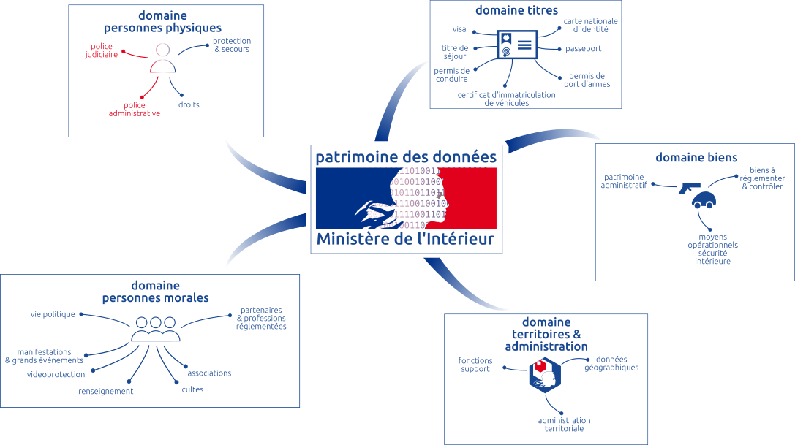
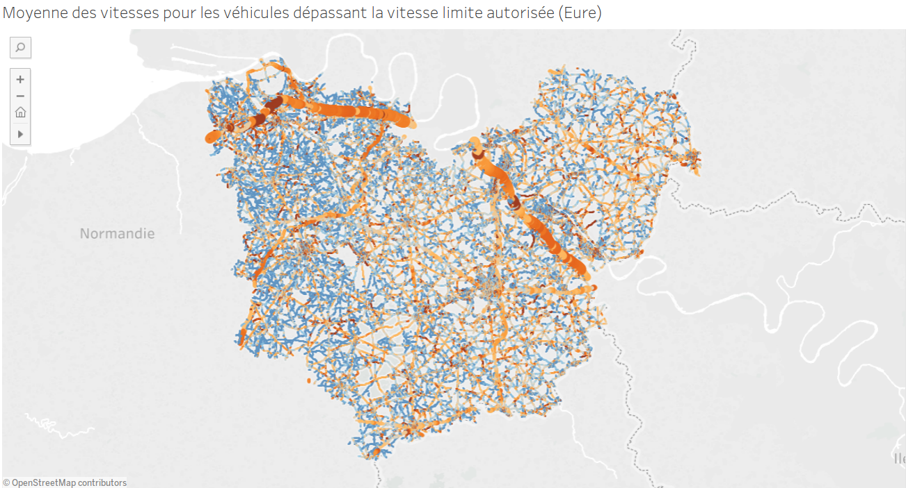

### qualité et réconciliation d'identités Fabien Antoine<br> Ministère de l'Intérieur
# Les données d'identité
<br/>
### descripteurs <div class="tile is-ancestor"> <div class="tile is-vertical is-12"> <div class="tile is-parent"> <div class="tile is-vertical is-8"> <div class="tile"> <div class="tile is-parent is-vertical"> <article class="tile is-child notification is-primary"> nom<br/> prénom<br/> lieu<br/> date de naissance </article> </div> <div class="tile is-parent"> <article class="tile is-child notification is-info"> NIR<br/> n° de titres (permis, passeport...)<br/> </article> </div> </div> <div class="tile is-parent"> <article class="tile is-child notification is-danger"> biométrie: <br/>empreinte, photo, <br/>iris, adn ... </article> </div> </div> <div class="tile is-vertical is-4"> <div class="tile is-parent"> <article class="tile is-child notification is-success"> coordonnées : adresse, mail, téléphone, IBAN ... </article> </div> <div class="tile is-parent"> <article class="tile is-child notification is-warning"> identité numérique: facebook, google, ... </article> </div> </div> </div> <div class="tile is-parent"> <div class="tile is-child"> <article class="tile is-child notification is-grey"> caractérisant métier (style d'auteur, ...) </article> </div> </div> </div> </div>
### volumes <div class="columns is-size-3"> <div class="column"> <ul> <li>INSEE: 67 M </li> <li>personnes décédées : 23 M </li> <li>carte d'identité : 80 M </li> <li>passeport : ~ 15 M </li> <li>permis de conduire: ~ 50 M </li> <li>titulaire de véhicule : ~ 40 M </li> </ul> </div> <div class="column"> <ul> <li> france connect : ~ 10 M </li> <li> identités fiscales: ~ 80 M </li> <li> possesseurs d'arme : ~ 1 M </li> <li> apprentis : ~ 10M </li> <li> Visa : ~ 2M / an </li> <li> FPR : ~ 20 k </li> </ul> </div> </div>
### qualité - doublons - ambiguité <small>origines - e.g Payet, Lefevre, N Guyen, Diallo ...</small> - champs partiels <small>droit : pas de code NIR, pas de lieu de naissance, ...</small> - process métier <small>e.g date naissance titulaire véhicule = concessionnaire</small> - criticité de l'identité <small>titres biométriques vs alias Snapchat)</small>
# cas d'usages identité
### problèmes à résoudre - <del>identification, authentification</del> - optimisation APIs <small>chaînes métiers: verbalisation</small> - fiabilisation statistique <small>jeunes accidentés, apprentis</small> - qualité d'un fichier <small>par croisement: décédés au permis, et doublons: armes</small> - criblage <small>frontières/FPR)</small> - fraude <small>immatriculation, fiscale, blanchiment</small>
#### taux de réconciliation #### entre deux fichiers d'états civils complets <div class="columns"> <div class="column is-one-third"><span class="button is-success is-rounded"> 30%-60% </span></div> <div class="column"><span class="button">appariements exacts <small>(au tiret près)</small></span></div> </div> <div class="columns"> <div class="column is-one-third"><span class="button is-info is-rounded"> 50%-80% </span></div> <div class="column"><span class="button">"tolérance faible" <small>(premier prénom, normalisation commune)</small></span></div> </div> <div class="columns"> <div class="column is-one-third"><span class="button is-warning is-rounded"> 90%-98% </span></div> <div class="column"><span class="button">appariement avancé <small>(flou, machine learning)</small></span></div> </div> <div class="columns"> <div class="column"> <small><i class="fas fa-arrow-circle-right"></i> attention aux métriques (rappel, précision)</small> </div> </div>
#### méthode - fiabilité identifiants techniques - dédoublonnage - évaluer la qualité des champs - mettre en qualité les sources et process - commencer avec des appariements simples (SQL tolérance faible) - au plus proche de la donnée - évaluer (métrique & annotation) - ... et les biais
#### métriques métier coût d'un manqué<br/> <small>vs</small><br/> coût d'un faux positif <i class="fas fa-arrows-alt-v"></i> manquer un terroriste aux frontières<br/> <small>vs</small><br/> temps d'attente aux frontière
#### indicateurs techniques <div class="columns"> <div class="column is-size-3"> <ul> <li> métriques F1-score, rappel </li> <li> taux de doublons </li> <li> taux de données dégradées <small>(champ partiellement manquant)</small></li> </ul> </div> <div class="column"> <img width="600" src="img/roc.png"><br/> </div> </div>
### traiter les cas d'usage identité avec <br/>
#### apports matchID <div class="columns is-variable"> <div class="column"> <div class="card"> <div class="card-header is-size-3"> <div class="card-header-title is-centered has-background-primary has-text-white"> accélération des études </div> </div> <div class="card-content is-size-5"> <ul> <li>outil d'évaluation <ul> <li>visualisation de résultats d'appariement</li> <li>annotation</li> <li>courbes de résultats</li> </ul> <li> outil de développement </li> <ul> <li>Python/Pandas/scikit</li> <li>SQL</li> <li>Elastiscearch</li> </ul> <li> données de références </li> <li> capitalisation en "recettes" </li> <li> rend accessible les gros volumes </li> </ul> </div> </div> </div> <div class="column"> <div class="card"> <div class="card-header is-size-3"> <div class="card-header-title is-centered has-background-primary has-text-white"> production </div> </div> <div class="card-content is-size-5"> <br/> <ul> <li> API-full <ul> <li>présente l'algorithme (bulk/unitaire)</li> <li>chargement de données</li> <li>orchestration des traitements</li> <li>monitoring</li> </ul> </li> <li> compatibilité (Python, any-SQL, ...) </li> <li> installabilité (CAAS-ready) </li> <li> scalabilité </li> </ul> <br/> <br/> </div> </div> </div> </div>
#### s'organiser <div class="columns is-variable"> <div class="column"> <div class="card"> <div class="card-header is-size-3"> <div class="card-header-title is-centered has-background-primary has-text-white"> étude </div> </div> <div class="card-content is-size-5"> <br/> <ul> <li>préciser le cas d'usage</li> <li>obtenir des données réelles (au moins 10k x 10k)</li> <li>infrastructure</li> <li>assembler les algorithme</li> <li>annoter au moins 1000 cas</li> <li>comprendre les données</li> <li>évaluer, itérer, partager</li> <li>cadrer les métriques</li> <li>restituer, décider</li> </ul> <br/><br/> charge: 5 à 20jh <br/><br/> </div> </div> </div> <div class="column"> <div class="card"> <div class="card-header is-size-3"> <div class="card-header-title is-centered has-background-primary has-text-white"> production </div> </div> <div class="card-content is-size-5"> <br/><br/> <ul> <li> piloter le chantier </li> <li> mettre en place les moyens</li> <li> cadre RGPD </li> <li> formaliser les métriques retenues </li> <li> mettre en qualité ce qui peut l'être en amont </li> <li> formaliser les interfaces </li> <li> optimiser les traitements </li> </ul> <br/><br/><br/> charge: 50 à 200jh <br/><br/> </div> </div> </div> </div>
#### cas d'usage traités <div class="columns is-variable"> <div class="column"> <div class="card"> <div class="card-header is-size-3 has-background-info has-text-white"> <div class="card-header-title is-centered has-background-info has-text-white"> décédés x SNPC </div> <span class="card-header-icon is-size-5"> <span class="icon" style="margin-right: 10px"> <i class="fas fa-check"></i> </span> </span> </div> <div class="card-content"> <small> radiation des décédés <br/> au permis de conduire<br/> qualité, fraude<br/> </small> </div> </div> <br/> <div class="card"> <div class="card-header is-size-3 has-background-success has-text-white"> <div class="card-header-title is-centered has-background-success has-text-white"> décédés x SIV </div> <span class="card-header-icon is-size-5"> <span class="icon" style="margin-right: 10px"> <i class="fas fa-spinner fa-spin"></i> </span> </span> </div> <div class="card-content"> <small> immatriculations<br/> en production<br/> évolutions, fraude<br/> </small> </div> </div> <br/> <div class="card"> <div class="card-header is-size-3 has-background-primary has-text-white"> <div class="card-header-title is-centered has-background-primary has-text-white"> AGRIPPA </div> <span class="card-header-icon is-size-5"> <span class="icon" style="margin-right: 10px"> <i class="fas fa-check"></i> </span> </span> </div> <div class="card-content"> <small> armes<br/> qualité, décédés, doublons<br/> étude<br/> </small> </div> </div> </div> <div class="column"> <div class="card"> <div class="card-header is-size-3 has-background-primary has-text-white"> <div class="card-header-title is-centered has-background-primary has-text-white"> jeunes accidentés </div> <span class="card-header-icon is-size-5"> <span class="icon" style="margin-right: 10px"> <i class="fas fa-check"></i> </span> </span> </div> <div class="card-content"> <small> pb qualité de donnée<br/> fiabilisation avec le SNPC<br/> 30% correction<br/> </small> </div> </div> <br/> <div class="card"> <div class="card-header is-size-3 has-background-primary has-text-white"> <div class="card-header-title is-centered has-background-primary has-text-white"> SIRH </div> <span class="card-header-icon is-size-5"> <span class="icon" style="margin-right: 10px"> <i class="fas fa-spinner fa-check"></i> </span> </span> </div> <div class="card-content"> <small> analyse qualité des champs<br/> doublons<br/> </small> </div> </div> <br/> <div class="card"> <div class="card-header is-size-3 has-background-primary has-text-white"> <div class="card-header-title is-centered has-background-primary has-text-white"> Coopération fiscale </div> <span class="card-header-icon is-size-5"> <span class="icon" style="margin-right: 10px"> <i class="fas fa-spinner fa-check"></i> </span> </span> </div> <div class="card-content"> <small> DGFIP<br/> étude<br/> 90% d'appariement<br/> </small> </div> </div> <br/> </div> <div class="column"> <div class="card"> <div class="card-header is-size-3 has-background-primary has-text-white"> <div class="card-header-title is-centered has-background-primary has-text-white"> Apprentis </div> <span class="card-header-icon is-size-5"> <span class="icon" style="margin-right: 10px"> <i class="fas fa-spinner fa-spin"></i> </span> </span> </div> <div class="card-content"> <small> Education nationale, DEPP<br/> fiabilisation statistique<br/> étude, annotation<br/> </small> </div> </div> <br/> <div class="card"> <div class="card-header is-size-3 has-background-primary has-text-white"> <div class="card-header-title is-centered has-background-primary has-text-white"> DGFIP </div> <span class="card-header-icon is-size-5"> <span class="icon" style="margin-right: 10px"> <i class="fas fa-spinner fa-spin"></i> </span> </span> </div> <div class="card-content"> <small> références fiscale<br/> complément chaîne opérationnelle<br/> </small> </div> </div> <br/> <div class="card"> <div class="card-header is-size-3 has-background-primary has-text-white"> <div class="card-header-title is-centered has-background-primary has-text-white"> Auteurs décédés </div> <span class="card-header-icon is-size-5"> <span class="icon" style="margin-right: 10px"> <i class="fas fa-spinner fa-spin"></i> </span> </span> </div> <div class="card-content"> <small> Education nationale<br/> Complément appariements avancés<br/> Conseils méthode et données<br/> </small> </div> </div> </div> </div>
### annoter avec matchID
<img style="max-width: 130%; margin-left:-150px; margin-top: -15px;" src="img/matchid-frontend-validation.png">
<div class="fig-container" style="height: 700px; width: 1300px;" > <iframe style="height: 700px; width: 1300px; margin-left: -330px" src="http://localhost:8081/matchID/projects/siv_pers/datasets/siv_x_deaths/validation" allowfullscreen </iframe> </iframe> </div>
### développer avec matchID
<img style="max-width: 130%; margin-left:-150px; margin-top: -30px;" src="img/matchid-dataprep.png">
<div class="fig-container" style="height: 700px; width: 1300px;" > <iframe style="height: 700px; width: 1300px; margin-left: -330px" src="http://localhost:8081/matchID/projects/clients/recipes/dataprep_clients" allowfullscreen </iframe> </iframe> </div>
#### banque d'algorithmes <div class="columns is-variable"> <div class="column"> <div class="card"> <div class="card-header has-background-info has-text-white"> <div class="card-header-title is-centered has-text-white "> normalisation NFD </div> <span class="card-header-icon is-size-5"> <span class="icon" style="margin-right: 10px"> <i class="fas fa-check"></i> </span> </span> </div> <div class="card-content"> <small> désaccentution<br/> Gräbener => Grabener<br/> variante : translittération<br/> es, pg, pandas, ..<br/> </small> </div> </div> <br/> <div class="card"> <div class="card-header has-background-primary has-text-white"> <div class="card-header-title is-centered has-background-primary has-text-white"> indexation phonétique </div> <span class="card-header-icon is-size-5"> <span class="icon" style="margin-right: 10px"> <i class="fas fa-clock"></i> </span> </span> </div> <div class="card-content"> <small> variantes translittérées<br/> sherazat => shéhérazade <br/> petit volume (bruit)<br/> es, pg, …<br/> </small> </div> </div> </div> <div class="column"> <div class="card"> <div class="card-header has-background-info has-text-white"> <div class="card-header-title is-centered has-background-info has-text-white"> indexation Levenshtein </div> <span class="card-header-icon is-size-5"> <span class="icon" style="margin-right: 10px"> <i class="fas fa-check"></i> </span> </span> </div> <div class="card-content"> <small> fautes de frappe limitées<br/> tristram <=> tristan<br/> variante : translittération<br/> es, solr, pandas inmemory<br/> </small> </div> </div> <br/> <div class="card"> <div class="card-header has-background-info has-text-white"> <div class="card-header-title is-centered has-background-info has-text-white"> scoring Levenshtein </div> <span class="card-header-icon is-size-5"> <span class="icon" style="margin-right: 10px"> <i class="fas fa-check"></i> </span> </span> </div> <div class="card-content"> <small> fautes de frappe avancées<br/> sherazat => shéhérazade <br/> petit volume (coûteux)<br/> pandas, es, pg<br/> </small> </div> </div> </div> <div class="column"> <div class="card"> <div class="card-header has-background-primary has-text-white"> <div class="card-header-title is-centered has-background-primary has-text-white"> indexation q-gram </div> <span class="card-header-icon is-size-5"> <span class="icon" style="margin-right: 10px"> <i class="fas fa-clock"></i> </span> </span> </div> <div class="card-content"> <small> ordre indifférent, adresses<br/> 3 bd garibaldi<br/> petit volume (bruit)<br/> pandas, es, pg<br/> </small> </div> </div> <br/> <div class="card"> <div class="card-header has-background-info has-text-white"> <div class="card-header-title is-centered has-background-info has-text-white"> scoring géographique </div> <span class="card-header-icon is-size-5"> <span class="icon" style="margin-right: 10px"> <i class="fas fa-check"></i> </span> </span> </div> <div class="card-content"> <small> distance km<br/> historique commune<br/> Levenshtein<br/> </small> </div> </div> </div> <div class="column"> <div class="card"> <div class="card-header has-background-info has-text-white"> <div class="card-header-title is-centered has-background-info has-text-white"> machine learning </div> <span class="card-header-icon is-size-5"> <span class="icon" style="margin-right: 10px"> <i class="fas fa-check"></i> </span> </span> </div> <div class="card-content"> <small> Scikit learn<br/> si très haute précision visée<br/> et moyens humains d'annotation<br/> </small> </div> </div> </div> </div>
#### banque de données de référence <div class="columns is-variable"> <div class="column"> <div class="card"> <div class="card-header is-size-3 has-background-primary has-text-white"> <div class="card-header-title is-centered has-background-primary has-text-white"> communes INSEE </div> <span class="card-header-icon is-size-5"> <span class="icon" style="margin-right: 10px"> <i class="fas fa-check"></i> </span> </span> </div> <div class="card-content"> <small> historique fusions<br/> 98% rectification<br/> population, gps </small> </div> </div> <br/> <div class="card"> <div class="card-header is-size-3 has-background-primary has-text-white"> <div class="card-header-title is-centered has-background-primary has-text-white"> pays INSEE </div> <span class="card-header-icon is-size-5"> <span class="icon" style="margin-right: 10px"> <i class="fas fa-check"></i> </span> </span> </div> <div class="card-content"> <small> normalisation<br/> historique<br/> gps<br/> </small> </div> </div> </div> <div class="column"> <div class="card"> <div class="card-header is-size-3 has-background-primary has-text-white"> <div class="card-header-title is-centered has-background-primary has-text-white"> statistiques noms </div> <span class="card-header-icon is-size-5"> <span class="icon" style="margin-right: 10px"> <i class="fas fa-check"></i> </span> </span> </div> <div class="card-content"> <small> <br/> données du permis de conduire <br/> </small> </div> </div> <br/> <div class="card"> <div class="card-header is-size-3 has-background-primary has-text-white"> <div class="card-header-title is-centered has-background-primary has-text-white"> prénoms composés </div> <span class="card-header-icon is-size-5"> <span class="icon" style="margin-right: 10px"> <i class="fas fa-check"></i> </span> </span> </div> <div class="card-content"> <small> <br/> données du permis de conduire <br/> </small> </div> </div> </div> <div class="column"> <div class="card"> <div class="card-header is-size-3 has-background-danger has-text-white"> <div class="card-header-title is-centered has-background-danger has-text-white"> nom x prenom </div> <span class="card-header-icon is-size-5"> <span class="icon" style="margin-right: 10px"> <i class="fas fa-spinner fa-road"></i> </span> </span> </div> <div class="card-content"> <small> fréquences noms+prénoms<br/> ambiguité<br/> à venir<br/> </small> </div> </div> <br/> </div> </div>
documentation et tutoriel sur https://matchid-project.github.io/
<div class="fig-container" style="height: 700px; width: 1300px;" > <iframe style="height: 700px; width: 1300px; margin-left: -330px" src="https://matchid-project.github.io/" allowfullscreen </iframe> </iframe> </div>
# Perspectives
### Roadmap <i class="fas fa-road"></i> <br> - organisation soutien avec Etalab et FTAP datascience MI - développements avec la DEPP <small>interactivité apprentissage</small> - projet API "décdés" <small>mise en production au ministère de l'intérieur </small>
<br/>
#### POC Vitesses <small>** 1000 milliards d'enregistrements ** <br/> - définir les métriques pertinentes (dépassements de vitesse, ...) - évaluer l'impact des politiques de sécurité routière sur la pratique - enjeux d'architecture (vertica, Hadoop) - décisionnel géograhique gros volume (galligeo, custom, ... ?)
<br/>
#### déploiement de l'entrepôt - finalisation : éducation routière, contrôle frontière - en cours: Actes, SID DGOM (+geo business) - opporunités: - sécurité routière :accidents / verbalisations / immatriculations / permis - sécurité civile : infosdis
# questions ? <small><a href="./valdon2018_datalab_FA.pdf">télécharger la présentation en version pdf</a> <small><a href="http://datalab.mi">site interne du datalab</a>